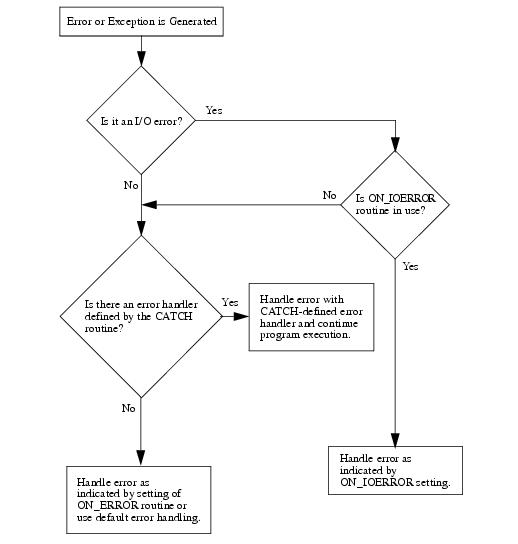

IDL divides possible execution errors into three categories: input/output, math, and all others. There are three main error-handling routines: CATCH , ON_ERROR , and ON_IOERROR . CATCH is a generalized mechanism for handling exceptions and errors. The ON_ERROR routine handles regular errors when an error handler established by the CATCH procedure is not present. The ON_IOERROR routine allows you to change the default way in which input/output errors are handled. The FINITE and CHECK_MATH routines provide control over math errors.
Note: The !ERROR_STATE system variable is updated when errors occur. At the beginning of an IDL session, !ERROR_STATE contains default information. To see this information, you can either view !ERROR_STATE from the System field of the Variable Watch Window (see The Variables View) or you can enter PRINT, !ERROR_STATE at the Command Line. After an error has occurred, all of the fields of !ERROR_STATE display their updated status. Refer to !ERROR_STATE for details.
You can also write code in such a manner as to anticipate and handle potential errors, especially when you are writing your own routines. See the following topics for details:
| • | Determining Variable Scope |
| • | Determining if a Keyword is Set |
Error handlers established by calls to CATCH supersede calls to ON_ERROR . However, calls to ON_IOERROR made in the procedure that causes an I/O error supersede any error handling mechanisms created with CATCH and the program branches to the label specified by ON_IOERROR.
The following figure is a flow chart of how errors are handled in IDL.

Error Handling in IDL